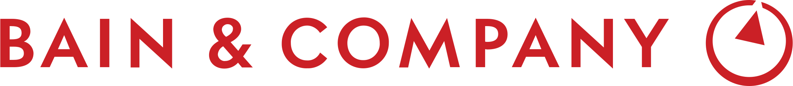

GLOBAL CONSULTING FRAMEWORK
세계 최고 컨설팅펌의
세계 최고 컨설팅펌의
검증된 방법론을 그대로 적용합니다
50년 이상 글로벌 기업들의 전략적 의사결정을 이끌어 온
3대 컨설팅펌의 핵심 방법론을 AI로 구현하여 모든 비즈니스 검증에 적용합니다.
가설 기반 문제 해결
MECE 분석
상호 배타적이고 전체를 포괄하는 분류로 문제를 빠짐없이 분해합니다
가설 주도 접근
핵심 가설을 먼저 세우고, 데이터와 근거로 체계적으로 검증합니다
피라미드 원칙
결론을 먼저 제시하고 근거로 뒷받침하는 구조화된 커뮤니케이션
이슈 트리
복잡한 문제를 검증 가능한 하위 질문으로 체계적으로 분해합니다
전략 프레임워크 설계
맞춤 프레임워크 선택
사업 유형과 결정 상황에 따라 최적의 분석 프레임워크를 조합합니다
경쟁 포지셔닝 분석
시장 내 경쟁 구조와 차별화 기회를 체계적으로 평가합니다
성장 전략 수립
시장 매력도와 역량을 교차 분석하여 성장 경로를 설계합니다
시나리오 플래닝
다양한 가정 하의 시나리오를 비교하여 최적 전략을 도출합니다

실행 중심 권고
결과 지향적 권고
분석에서 그치지 않고, 즉시 실행 가능한 구체적 행동 계획을 제시합니다
단위 경제학 분석
매출·비용·마진을 단위별로 분해하여 수익 구조의 본질을 파악합니다
고객 중심 전략
고객의 실제 행동과 구매 결정 과정을 기반으로 전략을 수립합니다
KPI와 중단 조건
성과를 측정할 지표와 철수 기준을 명확히 설정합니다
국가별·사업별 맞춤 최적화
동일한 프레임워크라도 국가의 규제 환경, 시장 구조, 산업 특성에 따라 적용 방식이 달라야 합니다. Hillstone Partners의 지난 10여년간 1,000개 이상의 국내 기업 컨설팅 데이터를 바탕으로 대한민국의 법률·규제·시장 상황에 맞게 커스터마이즈된 분석을 제공합니다.